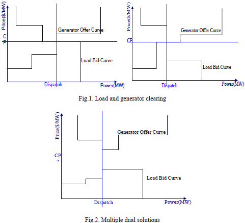
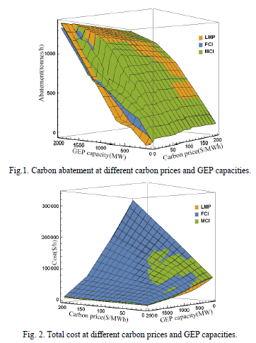
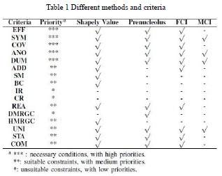

1 |
Determining the Locational Marginal Prices under Multiple Dual solutions
|
 |
My goal is to propose a new methodology that can yield a unique, impartial and robust solution when Lagrange multipliers are not unique. The key challenge for this problem is how to allocate the social surplus between consumers and suppliers impartially. Through analyzing the incentives of market participants, I propose a concept of pseudo marginal bid (PMB) and then add virtual surplus which is equal to the controversial part to provide an additional equation for the PMB. With the new relationship among the multipliers, the uniform nodal pricing can be determined. Now, we are trying to use constraint qualification (CQ) to identify whether multiple dual solutions would happen or not. |
2 |
Application of Carbon Intensity in Green Generation Expansion Planning
|
Green generation expansion planning (GGEP), which determines location, capacity, technology and time of building new green power plants, is a challenging problem due to its complexity. Through power flow tracing and marginal analysis, two nodal indexes, footprint carbon intensity (FCI) and marginal carbon intensity (MCI), can be obtained. In order to effectively simplify the green generation expansion problem, I use the two carbon intensity indexes (MCI and FCI) to identify the locations which are suitable for generation expansion and decide the expansion capacity. Also a comprehensive comparative analysis is given in order to further explore the carbon abatement effect and economic performance of them. |
 |
3 |
Allocating Carbon Emission Obligation in Demand Side
|
How to allocate carbon emission obligation among electricity consumers is a key challenge for load-based CO2 Cap-and-Trade market designs. But both FCI and MCI fail to properly measure the common carbon obligation caused by interactions of the loads. After realizing this problem is actually an allocation problem involving interactive decision making, I find cooperative game an ideal tool to deal with it. Then two classic solution concepts, Shapley value and prenucleolus, are applied to allocate the carbon obligation in demand side and compared with the methods based on FCI and MCI respectively. I have also established a criteria evaluation system for the carbon obligation allocation problem by analyzing and discussing several relevant axioms and rules. Now, I am trying other allocation methods like Aumann-Shapley pricing, Friedman-Moulin rule, etc. to address this problem for the balance of fairness and computational efficiency. |
 |